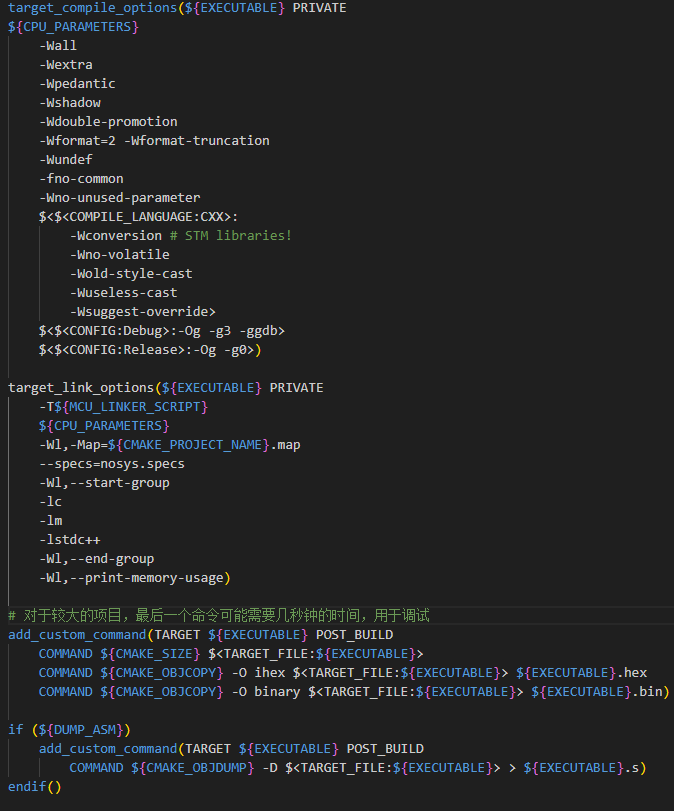

CMake + Python 搭建构建系统
一. 构建系统
1.1 编译器（compile）与构建系统（build system）
编译器
在软件开发中，编译器负责将源代码文件转化为可执行的二进制代码文件的，也可以说是将源代码“翻译”为可执行文件。
比如我们经常用的gcc，基本步骤是预处理、编译、汇编、链接。最终生成可执行文件或者共享库，绝大多数编译器的工作都是类似的。
构建系统
构建系统是一组软件工具和实用程序的集合，旨在简化和自动化软件开发中的构建过程。它提供了一个框架，用于管理和协调构建软件项目中涉及的各种任务和步骤。 通常包括但不限于编译源代码、解决依赖关系、链接库、生成可执行文件或分发包以及执行其他构建相关任务的工具。如我们常见的有GNU Make、Ninja等。
由此可见，构建系统是包含编译器的。
尽管随着时间的推移，构建系统也在不断发展和改进，引入了更多的功能和特性，以满足不断变化的软件开发需求。比如，构建缓存、增量编译、并行构建等技术。 但他们的大多数核心算法自从Make首次使用有向无环图（DAG）来表示文件之间的依赖关系，并确定构建顺序以来并没有发生太大的变化。
1. 我们是否可以直接使用编译器而不是用构建系统？
对构建系统的需求可能不那么显而易见。大多数工程师在学习编码时不会使用构建系统。大多数工程师会先直接从命令行调用 gcc 等工具，或在集成开发环境 (IDE)，如KEIL ECLIPS SES等中 中调用同类工具。只要所有源代码都位于同一目录中，就可以直接使用命令：
gcc -c file1.c -o file1.o
gcc -c file2.c -o file2.o
gcc file1.o file2.o -o output
objcopy -O ihex output firmware.hex
不过，一旦代码扩展，复杂功能就会开始。假设源文件位于不同的目录中，那么就需要在命令中指定路径。这样做会导致命令脚本变得复杂，难以维护。 并且大型系统通常涉及使用各种编程语言编写的不同部分，并且这些部分之间具有网络依赖项，这意味着，单一语言的编译器可能无法构建整个系统。在处理来自多种语言或多个编译单元的代码后，构建代码就不再是一步式流程了。
编译器也许可以只能到可以查看当前目录中查找要导入的代码，但是它却不能处理外部依赖项。例如java中的第三方jar文件。 如果没有构建系统，您可以通过从互联网下载依赖项并将其粘贴在硬盘上的 lib 文件夹中，然后将编译器配置为从该目录中读取库来管理。随着时间的推移，这些外部依赖项的更新、版本和源代码很难维护。
2. 我们是否可以使用shell脚本？
在最开始的时候，我们确实可以使用shell 脚本按照正确的顺序构件内容，这种做法可以在一段时间是可以解决问题。但随着时间的推移，系统依赖项越来越复杂，shell脚本将不剧本自动处理文件依赖、增量构建、并行处理、缓存管理等高级功能。 也就不能判断哪些文件需要重新编译。shell 脚本需要手动去添加修改，会使得我们的工作变得更加复杂。也许我们调试shell脚本所消耗的时间成本几乎和处理实际代码所消耗的时间一样多。
shell脚本也不支持跨平台，可移植性较差，并且缺乏灵活的扩展能力（比如插件和扩展生态系统）。
1.2 CMake
CMake是一个可扩展、开源的构建系统，它以独立于编译器的方式来管理操作系统中的构建过程。
和其他的构建系统不同，CMake 并不试图取代特定平台上的本地构建环境，而是与其结合使用。意思就是，Cmak e提供了一种独立于具体构建环境的、跨平台的构建配置语言和工具，用于生成本地构建系统所需的构建文件（如Makefile、Visual Studio、Ninja项目文件等）。这样，开发人员可以使用CMake来描述项目的构建过程和依赖关系，而无需直接与特定平台的构建系统交互。可以理解为构建系统更上层的抽象，用户只需编辑CMakeList.txt 这个文件来描述配置和规则，那它就可以按需生成适用于目标平台的本地狗见文件。
CMake定义了自己的语法和内置功能，并且可以用其他脚本语言来调用它来解释并声称实际的构建文件，下面将展示具体的配置文件：
CMakeLists.txt
CMakeLists.txt 文件存放于构建的项目工程根目录下。如果存在多个模块，并且每个模块都可以单独的编译构建，那么可以将CMakeLists.txt 文件放到子模块文件夹中。
.cmake
.cmake 文件作为CMakeLists.txt 文件的扩展，用于执行特定的构建任务或配置环境。通过将这些任务或配置放在独立的.cmake 文件中，可以使CMakeLists.txt文件更加清晰和简洁。 .cmake文件还可以用于定义模块（modules）以支持项目的构建。这些模块可以用于分离库的构建过程或为复杂的多模块项目提供额外的方法。
CMake 命令
CMake 命令类似于C/C++DE 的方法或函数，接收参数列表并相应地执行特定的任务。Cmake命令不区分大小写，并提供一些内置的命令，这些都可以去CMake的官方文档中查找 《CMake Commands》。
一些常用的内置命令：
message: 用于打印给定的信息
cmake_minimum_required: 设置CMake要使用的最低版本
add_executable: 添加给定名称的可执行目标
add_library: 用于定义库目标
add_subdirectory: 添加一个子构建目录。
一些条件、循环、迭代、赋值命令：
if, endif
elif, endif
while, endwhile
foreach, endforeach
list
return
set_property（给变量赋值）
CMake 并不强制要求缩进，但是仍然建议使用缩进，CMake并没有类似“;”来作为语句的结束符。所有的条件语句的结束都有其相应的结束命令，如 endif, endwhile, endforeach
CMake 环境变量
环境变量可以用于配置编译器标志、链接器标志和测试配置，以进行常规的构建过程。变量区分大小写它们特别适用于指导编译器在特定目录中搜索库文件和头文件。环境变量的详细列表可以从链接中获取： 《CMake Environment Variables》
可以使用${variable_name}来访问变量值,也可用set命令来为新变量设置值或更改现有的值：
message("CXX Standard: ${CMAKE_CXX_STANDARD}")
set(CMAKE_CXX_STANDARD 14)
CMake Lists
在 CMake 中，所有的值都被存储为字符串。然而，在某些上下文中，一个字符串可以被视为列表来使用。 CMake 中的列表是由分号";"分隔的字符串，可以在某些命令和函数中使用。当一个字符串被视为列表时，可以通过特定的语法来操作和访问其中的元素。
set(files a.txt b.txt c.txt)
message("Files: ${files}")
foreach(file ${files})
message("Filename: ${file}")
endforeach()
CMake 生成器表达式（Generator Expressions）
生成器表达式在构建系统生成期间进行评估，以生成针对每个构建配置特定的信息。它是一种特殊的语法，用于在构建系统生成期间根据构建配置生成特定的信息。
生成器表达式可以在CMakeLists.txt 文件中的多个地方使用，例如在目标属性、编译器选项、链接器选项等中。比如，LINK_LIBRARIES, INCLUDE_DIRECTORIES, COMPILE_DEFINITIONS等，在生成期间，这些表达式会被展开为实际的值或信息。它们可以根据构建类型、目标平台、编译器、操作系统等条件生成不同的结果。
我们也可以使用命令，例如target_link_libraries(), target_include_directories(), target_compile_definitions()等,如下示例：
target_compile_options(my_target PRIVATE
$<$<CONFIG:Debug>:-O0 -g>
$<$<CONFIG:Release>:-O3>
)
二. stm32 + cmake 开发环境
2.1 stm32Cube
使用stm32Cube生成工程
点击Project Mangager,生成Makefile
生成的工程应该如下图所示：
输入make指令

保存make日志
删除Makefile 和build 文件夹
创建CMake构建系统
在工程根目录下创建CMakeLists.txt 和 gcc-arm-none-eabi.cmake。 gcc-arm-none-eabi.cmake 用于基于gcc-arm-none-eabi的配置。配置参数可以从之前保存的make 日志里查找
输入命令：
cmake -Bbuild -DCMAKE_TOOLCHAIN_FILE=gcc-arm-none-eabi.cmake -DCMAKE_BUILD_TYPE=Debug
-DCMAKE_EXPORT_COMPILE_COMMANDS=true -G "MinGW Makefiles"
然后进入build目录就可以看到生成的Makefile 文件，在命令窗口输入make。
命令执行成功之后可以看到在build目录下生成了我们需要的文件
三. Python + CMake
我们在熟悉了CMake的操作之后，仍然会有疑问，我们每次在生成makefile文件的时候都要敲一些命令,类似 cmake -Bbuild -DCMAKE_TOOLCHAIN_FILE=gcc-arm-none-eabi.cmake -DCMAKE_BUILD_TYPE=Debug -DCMAKE_EXPORT_COMPILE_COMMANDS=true -G "MinGW Makefiles" 但有时候我并不记得这些命令，我只记得板子的型号，是否有更简单便捷的办法？
当然有，那就是强大的Python。
3.1 Python
Python 是一种高级、通用、解释型的编程语言，它被设计用于简单而清晰的语法。它具有丰富的标准库和大量的第三方库，使得它适用于各种不同的应用领域。
它是一种动态类型语言，不需要事先声明变量的类型。
它是解释型语言，无需编译，可以逐行运行代码。
它的生态系统中有大量的第三方库，提供了各种功能扩展和领域特定的解决方案。
它可以在多个操作系统上运行，包括 Windows、macOS、Linux 等。
我们搭建一个如下图所示的简单目录：
其中包含两个工程"led" 和"blink"，每个工程下放一个CMakeLists.txt, 里面内容如下图所示打印出自己的工程名：
在根目录下创建一个python文件，命名为build.py, 内容如下：
在命令行输入'python .\build.py -B led', 可以看到生成的对应'led'板子的构建文件，如下图所示：
在命令行输入'python .\build.py -B blink', 可以看到生成的对应'blink'板子的构建文件，如下图所示：
有时候我们不能安装python环境，那么我们可以将它打包成一个exe 文件，用如下命令，这里我选择的是Pyinstaller，当然你也可以选择其他的工具。
pyinstaller.exe --onefile .\build.py
打包完成之后，我们可以看到在dist目录下生成了一个exe文件，我们可以将它拷贝到工程目录下，然后在命令行输入'build.exe -B led'，就可以看到生成的对应'led'板子的构建文件，如下图所示：
你也可以将它添加到环境变量里，这样每次都可以直接执行命令。